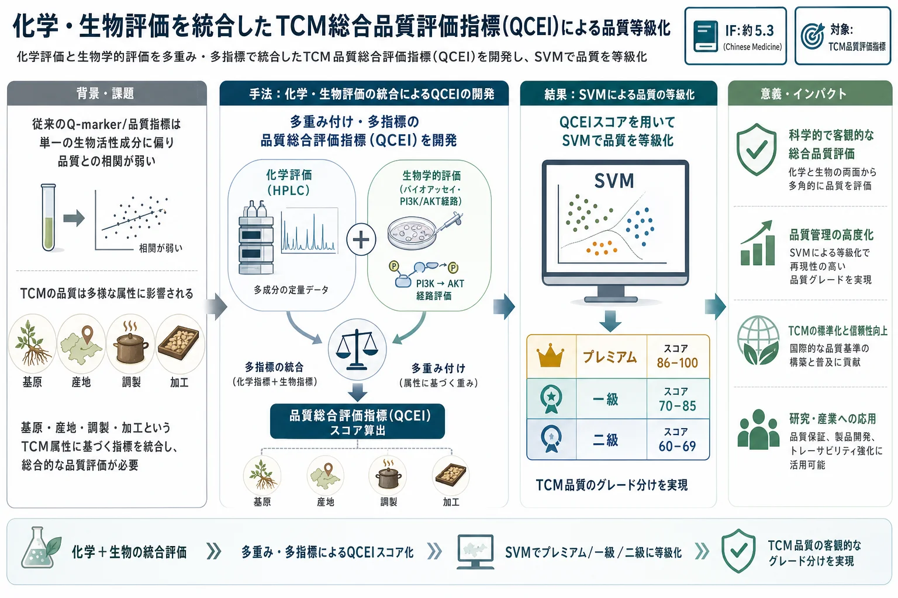
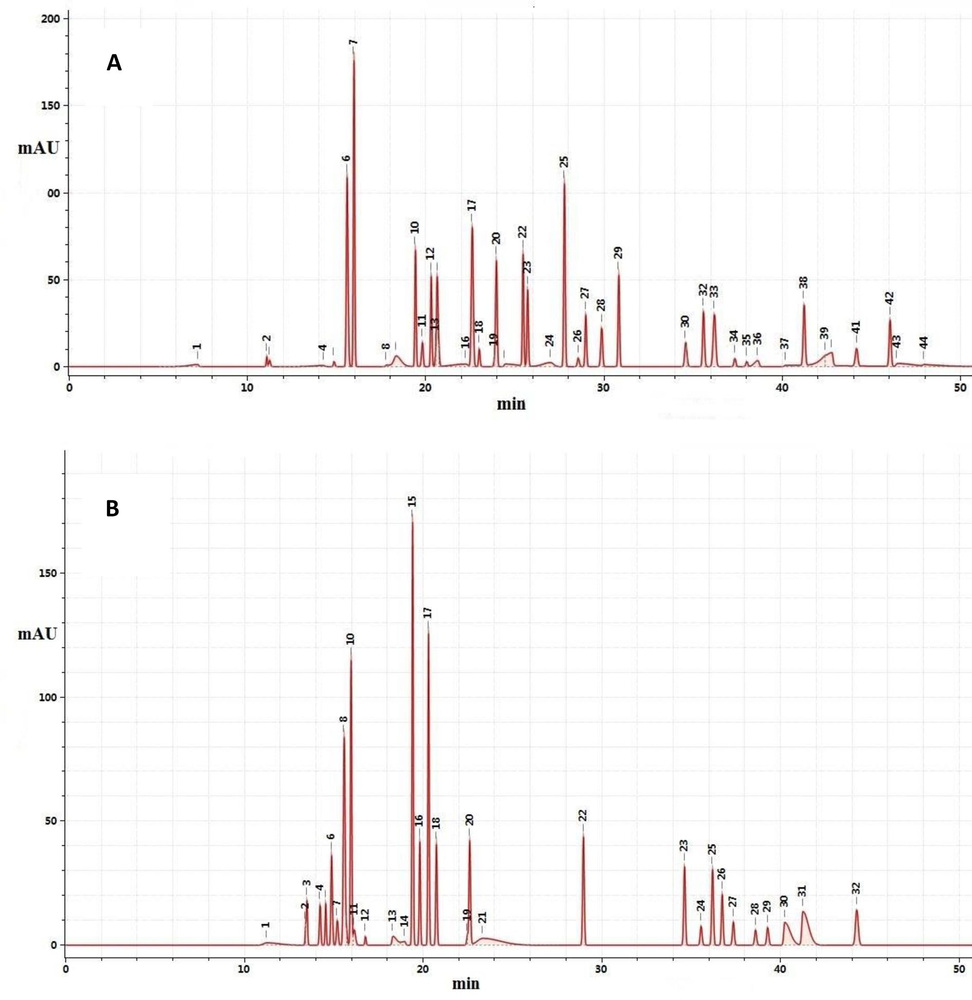
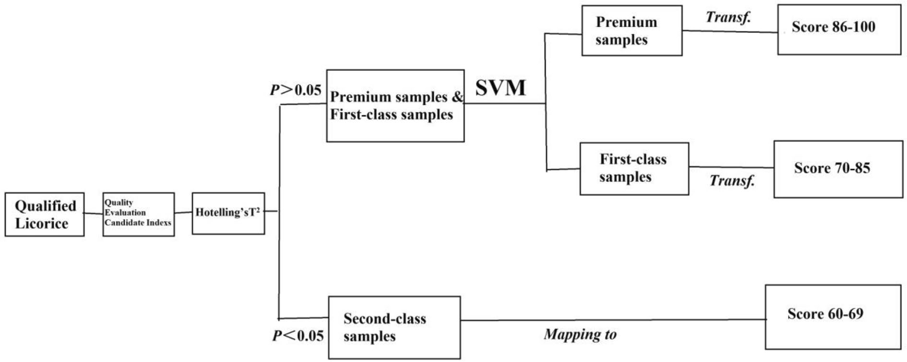
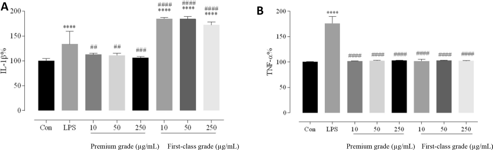
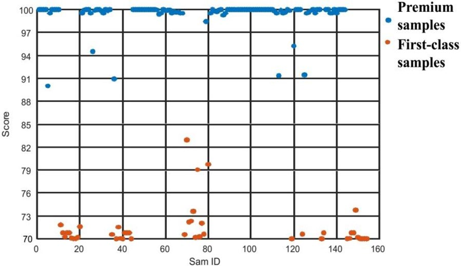
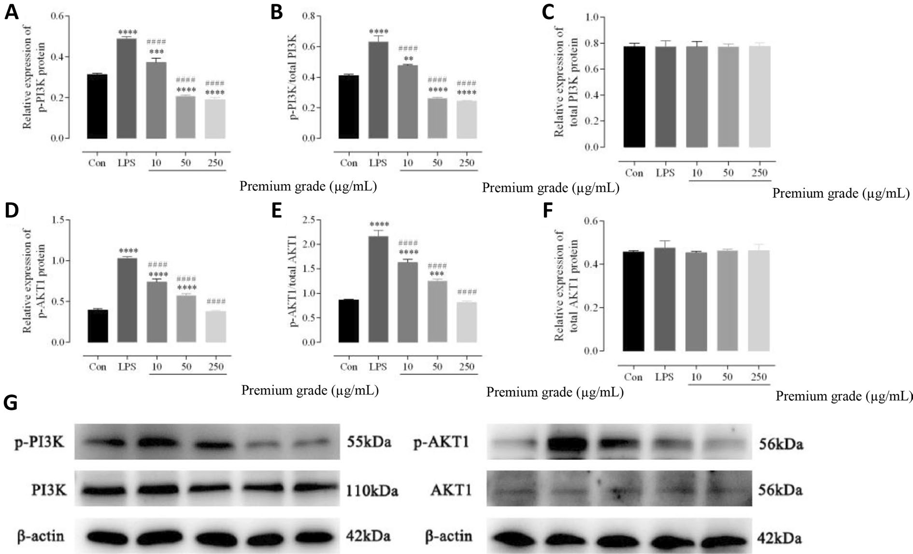

化学・生物評価を統合したTCM総合品質評価指標(QCEI)による品質等級化

<!-- 方針: ほぼ全訳＋必要に応じた補足。「> 補足:」は訳者注。数式はKaTeXで表示。 -->
書誌情報
- 原題: (Chen et al.) A quality-comprehensive-evaluation-index-based approach for the quality evaluation and grading of traditional Chinese medicine（原題は原文参照）
- 掲載: Chinese Medicine 2023, 18:89. https://doi.org/10.1186/s13020-023-00782-0（オープンアクセス）
- インパクトファクター: 約5.3（Chinese Medicine (BMC), JCR近年）
補足: 本稿は個別処方の分析でなく、「化学＋生物」を束ねた総合品質指標(QCEI)でTCMの品質を等級化する方法論の研究。Q-markerの弱点(単一活性成分偏重)を補い、基原・産地・調製・加工というTCM属性を指標化する点が特徴。
概要 (Abstract)
背景 (Background)
伝統中薬（TCM）の品質評価は、TCMの安全性を確保するための強力な手法である。TCMの品質評価手法は主に、性状評価、ならびに個別の物理的、化学的、および生物学的評価を含んでいるが、これらのアプローチには限界がある。それにもかかわらず、近年、研究者らは評価手法を統合し、TCM品質マーカー（Q-marker）などのフロンティア研究ツールの出現を推進している。これらの研究は主に生物活性に基づいており、品質指標と品質との間の相関は弱い。しかし、これらのTCM品質指標は、単一の生体活性成分の個々の有効性に焦点を当てているため、TCMの品質を正確に表していない。従来、基原（provenance）、生産地（place of origin）、調製（preparation）、および加工（processing）がTCM品質に影響を与える重要な属性である。本研究では、TCMの属性に基づく品質指標を同定し、TCMの品質を等級分けするための、複数重み付け・複数指標に基づく包括的なTCM品質総合評価指標（quality composite evaluation index: QCEI）を開発した。
方法 (Methods)
生産地、生育年数、および収穫時期は、TCMの重要な品質属性とみなされている。本研究では、甘草（licorice）をモデルTCMとし、多変量統計解析を用いてTCMの品質に影響を与えるとされる主要な要因に関連する品質指標を調査し、ネットワーク薬理学によって生物学的評価に基づく薬理活性指標を同定し、真の品質指標を確立し、機械学習モデルを用いてTCMの品質を等級分けするためのQCEIベースのモデルを開発した。最後に、異なる甘草の品質等級が炎症反応を異なる程度で抑制するかどうかを決定するために、ELISA解析を用いてRAW 264.7細胞におけるTNF-αおよびIL-1βのレベルを測定した。
結果 (Results)
21個の品質指標が、甘草の品質を等級分けする手法を確立するための好適な候補である。SVM（サポートベクターマシン）解析を用いて、TCM品質総合評価指標（TCM QCEI）を予測するためのコンピュータモデルを確立した。10分割クロスバリデーションの精度は90.26%であった。甘草の直径、全フラボノイド含量、250 nmおよび330 nmで記録されたHPLCクロマトグラム指紋図の類似度、ならびにリクイリチンアピオシド（liquiritin apioside）、リクイリチン（liquiritin）、グリチルリチン酸（glycyrrhizic acid）、リクイリチゲニン（liquiritigenin）の含量、および薬理活性品質指標が、甘草の品質評価モデルを構築するための重要な指標として同定され、それらのモデル寄与率はモデル内で比例的に重み付けされた。ELISA解析の結果は、ファーストクラス（一等）甘草よりもプレミアムグレード（特等）甘草のほうが炎症反応をより良好に抑制する可能性を予備的に示唆している。
結論 (Conclusions)
本研究において、伝統的な感官（感覚）的性状評価と、製造プロセスおよび薬理効果評価に基づく現代の標準化されたプロセスが、TCMの品質評価のために統合された。多次元の品質評価指標が機械学習モデルと統合され、重要な品質指標とその対応する重み係数が同定され、複数重み付け・複数指標による総合的な品質指標が確立され、TCMの品質を等級分けするためのQCEIベースのモデルが構築された。我々の結果は、TCMの品質管理研究の発展を促進し、ガイドする可能性がある。
キーワード (Keywords)
甘草（Licorice）、品質等級分け（Quality grading）、複数重み付け品質属性指標（Multiweighted quality attribute index）、ケモメトリクス（Chemometrics）、伝統中薬（Traditional Chinese medicine）、総合品質評価指標（Quality comprehensive evaluation index）、品質管理（Quality control）、薬理活性に基づく品質指標（Pharmacological activity-based quality index）
背景 (Background)
品質管理（QC）は伝統中薬（TCM）の品質と安全性を確保するための強力な手法であり、TCMの品質、安全性、および有効性を最大化し、高品質なTCMの産業的応用を促進するためには、TCMのQCを強化することが極めて重要である。TCMのQC研究の主な焦点として、TCMの品質評価はTCMの品質と安全性を決定するための強力な手法である。中国において、TCMの品質は従来、中国薬典（Chinese Pharmacopoeia）に基づく国家医薬品基準を用いて評価されてきたため、ほとんどのTCMの品質は最低限の基準を満たすことしかできない。具体的には、TCMの真偽鑑別（本質的な正しさの認証）は可能であるものの、TCMの優劣を区別することはできなかった。その結果、TCMの品質は不均一であり、高品質かつ手頃な価格の両立が難しく、市場の公平性が著しく損なわれており、これが高品質なTCMの産業的応用の発展を大きく制限している。TCMの等級分けは、TCMの品質を決定する主要な方法であり、歴代の栽培・使用経験に従って等級分けされたTCMの商品規格に基づいている。何千年間もの間、TCM原料は野生資源に由来していた。しかし、近年、野生資源の枯渇に伴い、人工栽培されたTCMが市場に広く普及している。その結果、オリジナルの分類方法は実用的なものではなく、伝統的なTCMの分類と現在のTCMの品質との相関は乏しくなっている。同様に、現在市場で入手可能なTCMの内部品質を確実に反映する適切な評価指標、および異なる品質指標の寄与率は、まだ策定されていない。
近年、多くの研究チームがTCMの品質を包括的に評価している。一部のチームは、複数の化学成分指標と多変量統計解析を組み合わせて、TCMの品質を生物学的に評価している[1, 2]。このアプローチは、TCMの品質評価がTCMの臨床的有効性や安全性を正確に反映できないという重要な問題を解決する。さらに、このアプローチは化学的評価や性状評価アプローチの欠点に対処する。しかし、この方法は、産地や標準化が品質に与える影響を考慮していない。一部のチームは、伝統中薬の品質マーカー（Q-marker）に基づくTCM品質評価モデルを提案している。Q-markerの確立には、天然物化学、分析化学、バイオニクス、ケモメトリクス、薬理学、システム生物学、および薬力学などの複数の分野が統合されている。Q-markerに基づく指紋図（フィンガープリント）および多成分定量は、より科学的なTCM QCシステムの開発につながっている[3–5]。しかし、Q-markerを同定するための効果的なプログラムや方法はまだ開発されていない。
従来、基原、生産地、機械加工、および加工処理がTCMの品質を決定する重要な属性である。TCMの品質は生産過程に由来するため、道地性（genuine production area）および標準化（伝統的な採掘および十分な年数の生育を含む）は、TCMの品質を確保し安定させるための重要な属性である。
補足: "genuine production area"は中医学・生薬学において「道地産地（道地）」を指す。
本研究では、高品質なTCM製品を確保するために、標準化された生産方法を用いて真正の甘草（Glycyrrhiza uralensis Fisch.）を生育させた[6]。甘草の重要な品質属性である、道地産地、生育年数、および収穫時期を用いて、品質特性に強く関連する内部品質指標を同定し、薬理活性指標を生物学的に評価した。重要な品質属性とそれらに対応する重み付けされた寄与率は、多次元的な研究を通じて確立された。最後に、提案された品質総合評価指標（QCEI）に基づいてTCMの品質を等級分けする方法が確立された。この目的を達成するために、我々は生産地、生育年数、および収穫時期が異なる282バッチの甘草サンプルを収集した。
提案されたTCM品質等級分け法は、TCM植物を栽培するための道地基地の開拓、TCM栽培条件の標準化、TCM生産プロセス全体のQC強化、および標準化され秩序あるTCM市場の確保にとって重要である。
方法 (Methods)
試薬および化学物質 (Reagents and chemicals)
高速液体クロマトグラフィー（HPLC）グレードのアセトニトリルおよびリン酸は、Fisher Scientific（Fairlawn, NJ, USA）から供給された。超純水（18.2 MΩ）は、Milli-Q™水精製システム（Millipore, Milford, MA, USA）を用いて調製した。他のすべての試薬は分析グレードであり、国薬集団化学試薬（Sinopharm Chemical Reagents、上海、中国）から購入した。
対照標準化合物であるリクイリチン（liquiritin）（化合物1；ロット番号111610-201908；純度95.00%）、ホルモノネチン（formononetin）（2；111703–201504；95.00%）、およびグリチルリチン酸モノアンモニウム塩（glycyrrhizic acid monoammonium salt）（3；110731–202021；96.20%）は、中国食品薬品検定研究院（National Institutes for Food and Drug Control: NIFDC；北京、中国）から提供された。
補足: "National Institutes for Food and Drug Control" は中国食品薬品検定研究院（NIFDC）のことである。
対照標準化合物であるリクイリチゲニン（liquiritigenin）（4；PRF20042742；99.50%）、イソリクイリチゲニン（isoliquiritigenin）（5；PRF20060943；99.87%）、イソリクイリチン（isoliquiritin）（6；PRF20040923；98.23%）、ネオイソリクイリチン（neoisoliquiritin）（7；PRF20060942；99.25%）、グリシクマリン（glycycoumarin）（8；PRF20060921；99.77%）、イソリクイリチンアピオシド（isoliquiritin apioside）（9；PRF9101021；97.04%）、リクイリチンアピオシド（liquiritin apioside）（10；PRF9050224；99.95%）、およびビオランチン（violanthin）（11；PRF9110601；95.77%）は、成都普菲徳生物技術有限公司（Chengdu Biopurify Phytochemicals, Ltd.、成都、中国）から購入した。
対照標準化合物であるリコイソフラボンB（licoisoflavone B）（12；PS20110202；98.02%）、グリシロール（glycyrol）（13；PS010089；98.71%）、およびリコイソフラボン A（licoisoflavone A）（14；PS010124；98.46%）は、成都普什生物科技有限公司（Chengdu Push Biotech、成都、中国）から入手した。
対照標準化合物であるリコフラボノール（licoflavonol）（15；MUST-20041311；98.86%）およびセミリコイソフラボンB（semilicoisoflavone B）（16；MUST20072104；99.91%）は、成都曼思特生物科技有限公司（Chengdu Must Biotechnology、成都、中国）から購入した。
甘草サポニンG2（licoricesaponin G2）（17；PCS200904；98.59%）は、成都純化学標準バイオ技術有限公司（Chengdu PureChem-Standard Biotech Co., Ltd.、成都、中国）から購入した。
甘草サンプル（282バッチ）は、中国の甘粛（Gansu）（S1–134）、内モンゴル（Inner Mongolia）（S135–255）、および新疆（Xinjiang）（S256–282）から収集された。代表的な甘草サンプルは、伝統的な甘草生産地域から収集された：甘粛省の楡中（Yuzhong）（S51–90）、内モンゴルのバヤンノール（Bayannao'er）（S145–184）、および内モンゴルのハンギン旗（Hangjin Banner）（S185–225）。これらのサンプルは、同じ栽培地域で2〜5年間継続して生育され、生育年数が甘草の品質にどのように影響するかを調査するために同じ季節に収穫された。伝統的な道地（genuine）および非道地（nongenuine）の生育地域が甘草の品質にどのように影響するかを調査するために、内モンゴルと甘粛の伝統的な道地栽培地域、および新疆の主要生産地域の非道地栽培地域から甘草サンプルを収集した。伝統的な道地栽培地域のサンプルはS41–50、S71–90、S135–144、S175–184、およびS214–225と同定され、非道地栽培地域のサンプルはS256–282と同定された。すべてのサンプルは、同じ年数生育し同じ季節に収穫された甘草の品質に生産地がどのように影響するかを調査するために使用された。収穫時期が甘草の品質にどのように影響するかを調査するために、同じ場所で栽培され同じ年数生育した甘草のサンプルを春と秋に収集した。秋のサンプル（S41–50、S155–164、およびS214–225と同定）は2018年および2019年の11月に収穫され、春のサンプル（S31–40、S236–245、およびS246–255と同定）は2018年および2020年の3月に収穫された。サンプルの産地、生育年数、および収穫時期は、追加ファイル1：表S1（Additional file 1: Table S1）に要約されている。甘草サンプルは、中国食品薬品検定研究院（NIFDC、北京、中国）の張南平（Nanping Zhang）教授によって、乾燥させた甘草（Glycyrrhiza uralensis Fisch. ex DC.）の根として同定された。証拠標本（Voucher specimens）は、NIFDCの中国伝統医薬品博物館に保管された[7]。
標準参照溶液および試料溶液の調製 (Preparation of the standard reference and sample solutions)
HPLC–フォトダイオードアレイ（PDA）検出用標準参照溶液の調製 (Preparation of standard reference solutions for HPLC–photodiode‑array (PDA) detection)
標準参照溶液は、化合物(1)–(17)を70%メタノール水溶液に完全に溶解させて、以下の濃度（µg/mL）を得ることで調製された：(1) 90.44、(2) 4.16、(3) 182.20、(4) 15.70、(5) 4.62、(6) 19.96、(7) 11.36、(8) 8.06、(9) 36.54、(10) 116.05、(11) 5.47、(12) 9.17、(13) 14.00、(14) 3.54、(15) 4.40、(16) 11.63、および(17) 46.26。すべての溶液は、分析前は4 °Cで保存された。
紫外・可視（UV–vis）分光法用標準参照溶液の調製 (Preparation of the standard reference solution for ultraviolet–visible (UV–vis) spectroscopy)
リクイリチンを70%メタノール水溶液に完全に溶解させて22.53 µg/mLの標準参照溶液を調製した。この溶液は分析前は4 °Cで保存された。
（UV–vis）吸収スペクトル標準化用溶液の調製 (Solution preparation for standardizing (UV–vis) absorption spectra)
異なる対照標準ストック溶液の容量（0.2、0.5、1.0、2.0、3.0、4.0、または5.0 mL）を正確にピペットで量り取り、ゴム栓付きの10 mLメスフラスコに加えた。次に、10% KOH溶液0.5 mLをピペットで量り取り、対応するメスフラスコに加え、25 °Cで5分間放置し、70%エタノールで希釈し、よく振り混ぜた。
HPLC–PDA検出用試料溶液の調製 (Preparation of the sample solutions for HPLC–PDA detection)
すべてのサンプルを粉砕し、50メッシュの篩を通過させた。乾燥粉末サンプル（1.0 g）をXSE 205DU電子天秤（Mettler Toledo, Zurich, Switzerland）を用いて精密に量り取り、ゴム栓付きの100 mL三角フラスコに入れた。成分は、50 mLの70%メタノール水溶液中での0.5時間の超音波処理によって抽出された。混合物を室温において12,000 rpmで10分間遠心分離した。最後に、上澄みを0.22 μmのフィルターで濾過した後、HPLC-PDA検出器に注入した。
UV–vis分光法用試料溶液の調製 (Preparation of the sample solutions for UV–vis spectroscopy)
すべてのサンプルを粉砕し、50メッシュの篩を通過させた。乾燥粉末サンプル（0.2 g）を精密に量り取り、ゴム栓付きの50 mL三角フラスコに入れた。成分は、10 mLの70%メタノール水溶液中での0.5時間の超音波処理（出力250 W、周波数40 kHz）によって抽出された。混合物を室温において12,000 rpmで10分間遠心分離した。最後に、上澄みを合わせてUV-vis分光光度計に注入した。
UV–vis分光法用発色溶液の調製 (Preparation of the chromogenic solution for UV–vis spectroscopy)
試験溶液（0.1 mL）を正確にピペットで量り取り、10 mLのメスフラスコに加えた。次に、10% KOH 0.5 mLを正確にピペットで量り取り、同じメスフラスコに加え、25 °Cで5分間放置した。その後、溶液混合物を70%エタノール水溶液で希釈し、よく振り混ぜた。
UV–vis分光法用ブランク溶液の調製 (Preparation of the blank solution for UV–vis spectroscopy)
KOH溶液（0.5 mL; 10%）を正確にピペットで量り取り、10 mLのメスフラスコに加え、70%エタノール水溶液で希釈し、よく振り混ぜた。
装置および測定条件 (Instrumentation and measurement conditions)
HPLC–PDA検出条件 (HPLC–PDA detection conditions)
HPLCは、Waters e2695 Alliance液体クロマトグラフシステム（Waters, Milford, MA, USA）およびWaters 2998フォトダイオードアレイ（PDA）検出器（Waters, Milford, MA, USA）を用いて実施された。甘草抽出物は、40 °Cで作動する資生堂 Capcell Pak MG C18（4.6 mm × 250 mm, 5 µm; 東京、日本）を用いてクロマトグラフィー分離された。
移動相は溶媒A（0.1%リン酸水溶液）および溶媒B（アセトニトリル）から構成されるグラジエントプログラムを用いた。流速は1.0 mL/minに設定され、グラジエント溶出は以下の通りであった：5–95% B (0–60 min)、95% B (60–65 min)、95–5% B (65–65.2 min)；カラムを平衡化するために5% Bで9.8分間保持した。サンプル注入量は10 µLであり、総分析実行時間は75分であった。PDA検出波長は250および330 nmであった。
UV–vis分光条件 (UV–vis spectroscopy conditions)
UV–vis分光法は、337 nmの波長で作動するUV2700 UV-vis分光光度計（島津製作所、京都、日本）を用いて実施された。
甘草の外観性状 (Licorice appearance characterization)
長さ測定 (Length measurement)
各バッチにおいて、平均サンプル長さを得るために、巻尺を用いて30個の甘草サンプルを無作為に測定した。
直径測定 (Diameter measurement)
各バッチにおいて、平均サンプル直径を得るために、ノギスを用いて蘆頭（reed head）の2 cm下の位置で30個の甘草サンプルの直径を無作為に測定した。
重量測定 (Weight measurement)
各バッチにおいて、平均サンプル重量を得るために、ME 303電子天秤（Mettler Toledo, Zurich, Switzerland）を用いて10個のサンプルを無作為に2回測定した。
細胞培養および処理 (Cell cultures and treatments)
マクロファージおよび炎症カスケードのインビトロ研究用モデルとして広く使用されているマウスマクロファージ（RAW264.7）細胞は、中国科学院細胞バンク（China National Collection of Authenticated Cell Cultures、上海、中国）から入手した。細胞は、10%ウシ胎児血清（FBS）を添加したDulbecco's modified Eagle's medium（DMEM）中、37 °C、5% CO2下で維持された。RAW264.7細胞を1 µg/mLのリポポリサッカライド（LPS; Sigma–Aldrich; Merck KGaA, Darmstadt, Germany）で24時間、37 °Cで処理した後、リン酸緩衝生理食塩水（PBS）で洗浄し、パイロトーシスを誘導するためにLPS（1 µg/mL）で刺激した。処理された細胞を回収し、酵素結合免疫吸着測定法（ELISA）およびウェスタンブロット解析によってタンパク質発現レベルを測定した。
サイトカイン検出のためのELISA (ELISA for detecting cytokine)
培養プレートから培養液を取り除き、細胞をトリプシンで消化し、培養液を加えた。培養プレート上の細胞を脱イオン水で洗浄した。細胞懸濁液を遠心チューブに回収し、2–8 °Cにおいて1000 × gで5分間遠心分離した。培養液を取り除き、細胞を冷PBSで3回洗浄した。細胞を適量の冷PBSで再懸濁した。細胞を完全に溶解させるために、−80 °Cと室温の間でサンプルを3回凍結融解させた。細胞破片を取り除くために、2–8 °Cにおいて1500 × gで10分間遠心分離し、上澄みを回収した[8–11]。
処理された細胞の上澄みにおけるインターロイキン（IL）-1βおよび腫瘍壊死因子（TNF）-αの発現レベルは、製造元の指示に従ってELISAアッセイ（IL-1β: マウス: ml063132-C; TNF-α: マウス: ml002095-C; 上海恒遠生物科技有限公司 (Enzyme-linked Biotechnology Co., Ltd.)、上海、中国）によって測定された。
ウェスタンブロット解析 (Western blot analysis)
RAW264.7細胞のタンパク質発現は、ウェスタンブロット解析を用いて検出された。細胞（1.6 × 10^5 細胞/ウェル）をオーバーナイトで播種し、示された濃度の生物活性化合物の存在下で処理した。1時間後、1 μg/mLのLPSを加えた。その後、24時間後に上澄みと沈殿細胞を回収した。免疫ブロッティングは、AKT1 (1:2,500; ab89402; Abcam, Cambridge, MA, USA)、p-AKT1 (1:5,000; ab81283; Abcam, Cambridge, MA, USA)、PI3K (1:1,000; 4249; Cell Signaling Technology, Inc., Danvers, MA, USA)、およびp-PI3K (1:1,000; bs-3332R; Bioss Antibodies, Biotechnology, Inc., 北京、中国)を含む標的タンパク質に対する抗体を用いて行われた。バンドは、増強化学発光キット（ECL, Amersham Biosciences, Buckinghamshire, UK）を用いて発色させ、ルミノイメージアナライザー（LAS-3000、富士写真フイルム株式会社、日本）を用いて測定された。
データ処理 (Data processing)
一元配置分散分析（ANOVA）、Studentのt検定、および相関分析は、IBM SPSS Statistics 23.0（IBM Corp., Armonk, NY, USA）を用いて実施された。主成分分析（PCA）および直交部分最小二乗判別分析（OPLS-DA）は、SIMCA®ソフトウェアバージョン13.0（Umetrics, Umea, Sweden）を用いて実施された。サポートベクターマシン（SVM）は、MATLAB®ソフトウェア（MathWorks, Inc., Natick, MA, USA）を用いて実施された。HPLC指紋図の類似度は、ChemPattern®ソフトウェアバージョン2017Pro（Chemmind, 北京、中国）を用いて解析された。
結果と考察 (Results and discussion)
伝統的性状に基づく品質指標の確立 (Establishment of the traditional trait-based quality index)
甘草の根はTCMにおいて約4000年間広く使用されており、TCMの品質は伝統的に主に感覚的評価に基づいて評価されてきた[12]。本研究では、甘草の根の長さ、直径、および重量が主な伝統的品質評価項目であった。品質属性に関連する外観性状指標を同定するため、異なる生産地で異なる年数生育し、異なる季節に収穫された80バッチの甘草サンプルを、「甘草の外観性状」のセクションに記載された方法を用いて分析した。測定結果は追加ファイル1：表S2に要約されている。
一元配置分散分析およびt検定 (One‑way ANOVA and t test)
異なる生産地で異なる年数生育し、異なる季節に収穫された甘草について、外観性状指標を分析した。伝統的な産地と現代の主要な産地で生育した甘草は、直径と重量において有意な差を示し、異なる年数生育した甘草は、長さ、直径、および重量において有意な差を示した。異なる季節に収穫された甘草は、直径と重量において有意な差を示した（P < 0.05）（追加ファイル1：表S3）。統計解析の結果は、異なる生育年数、生産地、および収穫時期の甘草の直径および重量指標が有意に異なることを示しており、したがって、潜在的な甘草の外観性状を評価するための品質指標として使用できることを示した。
相関分析 (Correlation analysis)
品質属性に関連する外観性状に基づいて甘草の品質を評価するための指標をさらに同定するため、異なる生産地で異なる年数生育し、異なる季節に収穫された甘草について、直径と重量の間の相関を個別に調査した。結果は追加ファイル1：表S4に示されている。相関分析の結果によると、異なる生産地で異なる年数生育し、異なる季節に収穫された甘草において、甘草の直径と重量は有意に相関していたため、どちらか一方を甘草の品質を評価するための外観性状指標として選択することができた。伝統的に甘草の品質を評価するために使用される最も重要な外観性状の一つである甘草の直径は、定量化しやすく検出も容易であるため、甘草の品質評価のための品質属性関連外観性状指標として使用された。
化学成分に基づく内部品質指標の確立 (Establishment of the chemical composition‑based internal quality index)
主要品質属性に基づくHPLC指紋図指標 (Key‑quality‑attribute‑based HPLC fingerprint index)
HPLC指紋図検証方法 (HPLC fingerprint validation method)
確立されたHPLC法がHPLC指紋図の類似度分析に適用可能であることを保証するために、中国薬典に基づく国家医薬品基準を満たすサンプルS81を用いて、HPLC指紋図の精密性、安定性、および再現性を検証した。
- 精密性 (Precision)：同じサンプルを6回連続して注入した。250 nmで記録されたHPLC指紋図において、相対保持時間およびピーク面積は、各共通指紋図ピークについて甘草サポニンG2参照ピークに基づいて算出された；各共通ピークの相対保持時間の相対標準偏差（RSD）は < 0.5%であり、相対ピーク面積のRSDは < 3.0%であった。さらに、330 nmで記録されたHPLC指紋図において、相対保持時間およびピーク面積は、各共通指紋図ピークについてイソリクイリチン参照ピークに基づいて算出された；各共通ピークの相対保持時間のRSDは < 0.5%であり、相対ピーク面積のRSDは < 3.0%であった。
- 安定性 (Stability)：同じサンプルを0、2、4、8、12、16、20、および24時間後に注入した。250 nmで記録されたHPLC指紋図において、相対保持時間およびピーク面積は、各共通指紋図ピークについて甘草サポニンG2参照ピークに基づいて算出された；各共通ピークの相対保持時間のRSDは < 0.5%であり、相対ピーク面積のRSDは < 3.0%であった。さらに、330 nmで記録されたHPLC指紋図において、相対保持時間およびピーク面積は、各共通指紋図ピークについてイソリクイリチン参照ピークに基づいて算出された；各共通ピークの相対保持時間のRSDは < 0.5%であり、相対ピーク面積のRSDは < 3.0%であった。
- 再現性 (Repeatability)：同じ甘草バッチから6個の反復サンプルを「甘草の外観性状」のセクションに記載された方法に従って調製した。250 nmで記録されたHPLC指紋図において、相対保持時間およびピーク面積は、各共通指紋図ピークについて甘草サポニンG2参照ピークに基づいて算出された；各共通ピークの相対保持時間のRSDは < 0.3%であり、相対ピーク面積のRSDは < 2.9%であった。さらに、330 nmで記録されたHPLC指紋図において、相対保持時間およびピーク面積は、各共通指紋図ピークについてイソリクイリチン参照ピークに基づいて算出された；各共通ピークの相対保持時間のRSDは < 0.3%であり、相対ピーク面積のRSDは < 3.0%であった。
HPLC指紋図類似度解析 (HPLC fingerprint similarity analysis)
異なる生産地で異なる年数生育し、異なる季節に収穫された甘草が異なるHPLC指紋図を示すかどうかを調べるために、「HPLC–PDA検出用試料溶液の調製」のセクションに記載された方法に従って調製し、「HPLC–PDA検出条件」のセクションに記載された方法に従って検出された試験溶液を用いて、250および330 nmでクロマトグラムを記録した。コサイン（余弦）角法を用いて、異なる生産地で異なる年数生育し、異なる季節に収穫された甘草について記録されたHPLC指紋図と、共通の甘草HPLC指紋図参照パターンとの間の類似度を算出した（図1）。
甘草のHPLC指紋図類似度の一元配置分散分析およびt検定解析 (One‑way ANOVA and t test analyses of licorice HPLC fin‑gerprint similarity)
330および250 nmで記録されたHPLC指紋図は、異なる生産地で異なる年数生育し、異なる季節に収穫された甘草サンプル間で有意に異なっていた（P < 0.05）；したがって、250および330 nmで記録されたHPLC指紋図が内部品質評価指標として同定された。測定結果は追加ファイル1：表S5に要約されている。
図1 甘草の共通HPLC指紋図パターン。(a) 250 nmおよび (b) 330 nmで記録。 250 nmにおいて、ピーク6はリクイリチンアピオシド（liquiritin apioside）、ピーク7はリクイリチン（liquiritin）、ピーク10はイソリクイリチンアピオシド（isoliquiritin apioside）、ピーク12はイソリクイリチン（isoliquiritin）、ピーク13はネオイソリクイリチン（neoisoliquiritin）、ピーク17はリクイリチゲニン（liquiritigenin）、ピーク25は甘草サポニンG2（licoricesaponin G2）、ピーク27はイソリクイリチゲニン（isoliquiritigenin）、ピーク28はホルモノネチン（formononetin）、ピーク30はグリシクマリン（glycycoumarin）、ピーク32はセミリコイソフラボンB（semilicoisoflavone B）、ピーク34はリコイソフラボンA（licoisoflavone A）、ピーク38はリコイソフラボンB（licoisoflavone B）である。330 nmにおいて、ピーク6はビオランチン（violanthin）、ピーク8はリクイリチンアピオシド、ピーク10はリクイリチン、ピーク15 is isoliquiritin apioside, peak 17 is isoliquiritin, peak 18 is neoisoliquiritin, peak 20 is liquiritigenin, peak 22 is isoliquiritigenin, peak 23 is glycycoumarin, peak 24 is semilicoisoflavone B, peak 27 is licoisoflavone A, peak 28 is glycyrol, peak 30 is licoflavonol, and peak 31 is licoisoflavone B。 > 補足: ピーク説明の330 nmについて後半一部が英語のままであるが、250 nmと同様に以下のように訳される。 > ピーク15はイソリクイリチンアピオシド、ピーク17はイソリクイリチン、ピーク18はネオイソリクイリチン、ピーク20はリクイリチゲニン、ピーク22はイソリクイリチゲニン、ピーク23はグリシクマリン、ピーク24はセミリコイソフラボンB、ピーク27はリコイソフラボンA、ピーク28はグリシロール、ピーク30はリコフラボノール、ピーク31はリコイソフラボンBである。
主要品質属性に基づいて決定された全フラボノイド指標 (Total flavonoid index determined based on the key quality attributes)
甘草の全フラボノイド含量の解析 (Analysis of the total licorice flavonoid contents)
異なる生産地で異なる年数生育し、異なる季節に収穫された甘草の異なる全フラボノイド含量を調査するために、「UV-vis分光法用試料溶液の調製」から「UV-vis分光法用ブランク溶液の調製」のセクションに記載された方法に従って試験溶液を調製し、「（UV-vis）吸収スペクトル標準化用溶液の調製」のセクションに記載された方法に従って参照溶液を調製した。全サンプルフラボノイド濃度は、「UV-vis分光条件」のセクションに記載された方法を用いて決定された。測定結果は追加ファイル1：図S1に要約されている。
甘草の全フラボノイド含量の一元配置分散分析およびt検定解析 (One‑way ANOVA and t test analyses of the total licorice flavonoid contents)
SPSS® 23.0ソフトウェアを用いて、甘草の全フラボノイド含量を統計的に分析した。その結果、異なる生産地で異なる年数生育し、異なる季節に収穫された甘草サンプルの全フラボノイド含量は有意に異なり（P < 0.05）、甘草の全フラボノイド含量が内部品質評価指標として同定された。測定値は追加ファイル1：表S6に要約されている。
主要品質属性に基づいて決定された甘草エキス含量 (Licorice extract contents determined based on the key quality attributes)
甘草エキス含量と主要品質属性との関係を調査するため、中国薬典（2020年版）に記載されている関連方法に従って、水および50%エタノール水溶液を用いて甘草を抽出した[6]。異なる生産地で異なる年数生育し、異なる季節に収穫された甘草の水溶性およびアルコール可溶性エキスについて、一元配置ANOVAおよびt検定を用いて結果を分析した。
統計解析の結果、異なる生産地で異なる年数生育し、異なる季節に収穫された甘草について、アルコール可溶性甘草エキス含量は有意に異なっていたが（P < 0.05）、水溶性甘草エキス含量については異なる生産地で生育した甘草間でほとんど差がなかった（P > 0.1）。包括的な甘草の品質と主要品質属性との相関を調査するために、アルコール可溶性エキスが内部品質評価指標として同定された。測定値は追加ファイル1：図S2および表S7に要約されている。
主要品質属性に基づいて決定された化学成分指標 (Chemical composition indices determined based on the key quality attributes)
前回の研究[7]において、超高速液体クロマトグラフィー-四重極飛行時間型質量分析（UHPLC-QTOF/MS/MS）および超高速液体クロマトグラフィー-トリプル四重極質量分析（UHPLC-TQ-MS/MS）を用いて、異なる生産地で異なる年数生育し、異なる季節に収穫された158バッチの甘草を分析した。我々はサンプルの含有量を評価するための指標として使用できる17個の化合物からなるパネルを同定した。次に、158のサンプルバッチをHPLC-PDA検出を用いて分析し、17個の化合物含有量を決定した。HPLC測定法のバリデーションは前回の研究で完了している[7]。すべての分析物は、試験濃度範囲にわたって優れた直線性（$R^2 \ge 0.9994$）を示した。LODおよびLOQの値は、それぞれ0.0061–0.0628 µg/mLおよび0.0203–0.2092 µg/mLの範囲であった。化合物の平均回収率は91.19–101.25%の範囲であった（相対標準偏差、RSD $\le 2.18\%$）。安定性、精密性、および再現性試験によって検出された化合物ピーク面積のRSD値は、それぞれ2.92%、1.00%、および2.33%未満であった。これらの結果に基づき、本方法は正確であり検証された。最後に、サンプル中のTCM品質属性に関連する化学成分指標を同定するために、複数の多変量統計解析（一元配置ANOVA、t検定、PCA、およびOPLS-DA）を実施した。OPLS-DAモデルにおけるVIPスコア（VIPスコア $\ge 1.0$）に基づいて、結果は、甘草サポニンG2、グリチルリチン酸、ホルモノネチン、ビオランチン、リクイリチンアピオシド、リクイリチン、イソリクイリチンアピオシド、イソリクイリチン、ネオイソリクイリチン、イソリクイリチン異性体（isoliquiritin isomer）、リクイリチゲニン、セミリコイソフラボンB、グリシロール、リコフラボノール、およびリコイソフラボンBが、適切なTCM品質属性関連化学成分指標であることを示した。
薬理活性に基づく品質指標の確立 (Establishment of a pharmacological activity‑based quality index)
前回の研究[13]において、甘草の薬理効果の基礎となる作用機序がネットワーク薬理学を用いて分析され、同時に異なる生物活性化合物が甘草において分類された。主要な甘草生物活性化合物は、UHPLC-QTOF-MS/MSを用いて同定された。リクイリチンアピオシド、リクイリチゲニン、およびイソリクイリチンアピオシドが主要な甘草生物活性成分であった。リクイリチンアピオシドおよびイソリクイリチンアピオシドはNF-κB、TNF、およびIL-1βに関与する遺伝子から構成され、リクイリチゲニンはPI3K/AKTに関与する遺伝子から構成されていた。グリチルリチン酸は主要な代表的甘草化学成分であり、NF-κBおよびTNFに関与する遺伝子から構成されていた。これらすべての遺伝子は抗炎症免疫活性において重要な役割を果たしている。したがって、リクイリチンアピオシド、リクイリチゲニン、グリチルリチン酸、およびイソリクイリチンアピオシドの抗炎症特性が、ELISAおよびウェスタンブロット解析を用いて決定された。
本研究において、リクイリチンアピオシド、リクイリチゲニン、グリチルリチン酸、およびイソリクイリチンアピオシドが薬理活性指標として同定された。これら4つの薬理活性指標の合計が、薬理活性に基づく甘草品質指標として使用された。
甘草品質評価のための総合的方法 (Comprehensive method for evaluating the licorice quality)
「伝統的性状に基づく品質指標の確立」から「薬理活性に基づく品質指標の確立」のセクションにおいて、高品質な甘草の生産を確保するための重要な要因として、標準化された生産と道地性が選択された。我々は、甘草の重要な品質属性（道地産地、生育年数、および収穫時期など）と強く相関する複数の品質指標を検討した。本研究では、薬理活性指標を同定するための甘草の生物学的評価を実施し、また、伝統的な感覚的評価に基づく甘草の直径指標、および内部化学成分に基づく他の指標（アルコール可溶性エキス；全フラボノイド含量；250および330 nmで記録されたHPLC指紋図；甘草サポニンG2、グリチルリチン酸、ホルモノネチン、ビオランチン、リクイリチンアピオシド、リクイリチン, イソリクイリチンアピオシド、イソリクイリチン、ネオイソリクイリチン、イソリクイリチン異性体、リクイリチゲニン、セミリコイソフラボンB、グリシロール、リコフラボノール、およびリコイソフラボンBの含量；ならびに、グリチルリチン酸、リクイリチンアピオシド、リクイリチゲニン、およびイソリクイリチンアピオシドの薬理活性指標の合計からなる薬理活性に基づく品質指標）を含む品質指標を同定するための品質属性に基づく評価を実施した。
これら21個の品質指標は、甘草の品質を等級分けするための手法を確立するのに適した候補である。収集された282バッチのサンプルのうち、中国薬典に基づく国家医薬品基準を満たした189バッチのサンプルが、品質分類モデルを確立するために使用された。道地産地、生育年数、および収穫時期を真の品質評価要因として考慮し、異なる生産地で異なる年数生育し異なる季節に収穫された189バッチの甘草を、それぞれプレミアム（特等）、ファーストクラス（一等）、セカンドクラス（二等）のサンプルとして、52、92、および45バッチに分類した。測定結果は追加ファイル1：図S3に要約されている。
甘草品質等級分けのための多変量解析モデルの開発 (Development of the multivariate analysis model for grading licorice quality)
甘草は複雑な多成分のTCMシステムであり、道地産地、生育年数、および収穫時期などの品質属性に密接に関連する多くの主要な要因が、甘草品質の総合的な評価をさらに複雑にしている。非線形分類、小サンプル要求、および高次元パターン認識などの独自の利点により、SVMは甘草の品質の総合的な評価を促進することができる[14–16]。したがって、甘草の品質を等級分けする手法を確立するためにSVMを使用した。SVMは2クラス分類モデルに基づいて動作するため、甘草サンプルは当初3つの品質レベルに従って分類された。そのため、SVMモデリングの前に、セカンドクラスのサンプルを決定するための基礎としてサンプルの信頼境界を確立し、その後、プレミアムおよびファーストクラスのサンプルを予測するためにSVMを使用した。189バッチのサンプルを研究対象とし、21個の候補指標を用いて甘草品質等級分けモデルを確立し、TCM品質総合評価指標（TCM QCEI）を予測するためのコンピュータモデルをSVM解析を用いて確立した。モデル確立プロセスを図2に示す。研究結果は以下のように決定された。
- ステップ 1：グリッドを最適化することにより、ラジアルベース関数（RBF）SVMパラメータを $10^{-5}$ から $10^5$ の範囲、および $e^{-5}$ から $e^5$ の範囲で最適化した。最適なモデルパラメータ $C$ および $\gamma$ はそれぞれ 7.56 および 510.89 であり、10分割クロスバリデーションの精度は 91.56% であった。
- ステップ 2：モデルパラメータ $C$ および $\gamma$ を変更せず、一度に1つの変数を除去し、ヤコビ行列の差（difference of the Jacobi matrix: DJ）の変化値を算出した。
- ステップ 3：変数の寄与をDJ値に基づいてソートした。DJ値が比較的大きい9つの変数を主要品質パラメータとして選択し、モデルを再学習させた。モデルパラメータ $c$ および $\gamma$ はそれぞれ 33.71 および 19,634（原文19634）であった。10分割クロスバリデーションの精度は 90.26% であった。甘草の直径、全フラボノイド含量、250および330 nmで記録されたHPLCクロマトグラム指紋図の類似度、リクイリチンアピオシド、リクイリチン、グリチルリチン酸、およびリクイリチゲニンの含量、ならびに薬理活性品質指標が、甘草の品質評価モデルを構築するための重要な指標として同定され、それらの寄与率はモデル内で比例的に重み付けされた。SVMに基づく甘草品質予測モデルに対する21個の候補指標の寄与を表1および追加ファイル1：図S4に示す。
- ステップ 4：トレーニングセットサンプルのスコアに基づいて、モデルスケールを拡大するためにS字型（シグモイド）関数を用いてモデルの事後確率をフィッティングした。総合スコアは10分割クロスバリデーションに基づいて推定された；プレミアムおよびファーストクラスサンプルのQCEIスコア（それぞれ86–100および70–85の範囲）を図3に示す。
図2 モデル確立プロセス
表1 SVMベースの予測モデルに対する21個の候補指標の寄与率 (Contributions of the 21 candidate indices to the SVM-based prediction model)
| 指標 (Index) | 寄与率 (Contribution) (%) | 指標 (Index) | 寄与率 (Contribution) (%) | 指標 (Index) | 寄与率 (Contribution) (%) |
|---|---|---|---|---|---|
| 甘草サポニンG2 (Licoricesaponin G2) | 0.94 | リクイリチゲニン (Liquiritigenin) | 8.01 | リコフラボノール (Licoflavonol) | $2.55 \times 10^{-2}$ |
| グリチルリチン酸 (Glycyrrhizic acid) | 4.86 | ビオランチン (Violanthin) | $2.06 \times 10^{-2}$ | アルコール可溶性エキス (Alcohol-soluble extract) | 1.15 |
| ホルモノネチン (Formononetin) | $3.17 \times 10^{-2}$ | イソリクイリチンアピオシド (Isoliquiritin apioside) | 0.44 | 直径 (Diameter) | 12.73 |
| セミリコイソフラボンB (Semilicoisoflavone B) | $3.33 \times 10^{-2}$ | イソリクイリチン異性体 (Isoliquiritin isomer) | $3.39 \times 10^{-2}$ | 薬理活性指標 (Pharmacological activity index) | 14.52 |
| リコイソフラボンB (Licoisoflavone B) | 0.72 | イソリクイリチン (Isoliquiritin) | 0.51 | 全フラボノイド含量 (Total flavonoid content) | 26.14 |
| リクイリチンアピオシド (Liquiritin apioside) | 4.83 | ネオイソリクイリチン (Neoisoliquiritin) | 0.23 | HPLC指紋図クロマトグラム類似度(250 nm) (HPLC fingerprint similarity (250 nm)) | 2.18 |
| リクイリチン (Liquiritin) | 20.07 | グリシロール (Glycyrol) | $5.00 \times 10^{-3}$ | HPLC指紋図クロマトグラム類似度(330 nm) (HPLC fingerprint similarity (330 nm)) | 2.52 |
抗炎症薬理作用に予備的に基づく甘草品質等級分けモデルの検証 (Validation of the licorice quality grading model preliminarily based on anti‑inflammatory pharmacological effects)
本研究では、甘草の品質を等級分けするためのモデルを確立するために、RBF SVMおよびTCM QCEI評価指標を使用した。モデルの10分割クロスバリデーションの正解率は 90.26% であった。モデルの合理性をさらに確認するために、インビトロ細胞モデルを使用して、異なる甘草品質等級の薬理活性を予備的に検証した。
前回の研究で得られたネットワーク薬理学の結果によると、甘草の主要な生物活性成分遺伝子は抗炎症免疫活性に大きく貢献していた[13]。本研究では、異なる甘草の品質等級が炎症反応を異なる程度で抑制するかどうかを決定するために、ELISA解析によってRAW 264.7細胞におけるTNF-αおよびIL-1βのレベルを測定した。TCM QCEIスコアに基づいて決定されたプレミアムおよびファーストクラスの甘草バッチが、代表的なサンプルとして選択された。
インビトロ実験において、RAW 264.7細胞におけるTNF-αおよびIL-1βのレベルは、ブランク対照と比較して、LPS刺激後に有意に増加した（P < 0.0001）。LPS単独群は、異なる甘草品質等級で処理されたLPS群よりも高いTNF-αレベルを示した（P < 0.0001）。LPS単独群は、プレミアムグレードの甘草で処理されたLPS群よりも高いIL-1βレベルを示し（P < 0.01）、ファーストクラスの甘草で処理されたLPS群よりも低いIL-1βレベルを示した（P < 0.0001）；これらの結果は、LPSによって誘発される過剰なTNF-αおよびIL-1βの分泌が、それぞれ異なる甘草品質等級およびプレミアムグレードの甘草のみによって減少させられることを示した（図4）。甘草の化学成分は極めて複雑である。いくつかの成分は抗炎症作用を示し、他の成分は双方向の調節効果を示す。本研究では、異なる甘草の品質等級がTNF-αを阻害したが、IL-1βに対しては異なる影響を及ぼした。これは、抗炎症成分と双方向調節成分がTNF-αとIL-1βの比率に異なる影響を与える可能性があることを示している。したがって、異なる抗炎症および双方向調節成分の含有量がTNF-αおよびIL-1βの傾向を変化させる可能性があり、異なる甘草の品質等級におけるいくつかの化学成分の含有量が異なり、異なる効能をもたらす可能性がある[17–19]。これらの結果は、すべての異なる甘草の品質等級が抗炎症活性を示し、炎症反応はファーストクラスの甘草よりもプレミアムグレードの甘草によってより良好に減少させられる可能性が高いことを予備的に示した。
甘草の抗炎症活性の基礎となるメカニズムを調査するために、ウェスタンブロッティング解析を用いて甘草の調節効果を検証した。ウェスタンブロッティングは、LPS活性化マクロファージにおいて、甘草がp-PI3K（図5a）、p-AKT1（図5d）、p-PI3K/PI3K（図5b）、およびp-AKT1/AKT1（図5e）によって媒介されるPI3K/AKTシグナル伝達経路を著しく抑制することを示した。
図3 SVMにより算出されたTCM QCEI分類図 図4 異なる甘草品質等級によるLPS誘発性サイトカインおよびケモカイン産生の減少効果。 ELISAを介して(a) IL-1βおよび(b) TNF-αレベルを測定するために上澄みを回収した。データは平均値 ± 標準誤差（n = 3）として示されている。Con群に対して P < 0.05, P < 0.01, P < 0.001, ****P < 0.001 vs. Con group; LPS群に対して #P < 0.05, ##P < 0.01, ###P < 0.001, ####P < 0.0001 vs. LPS group。IL: インターロイキン; LPS: リポポリサッカライド; TNF: 腫瘍壊死因子
PI3K/AKTシグナル伝達経路は、細胞の増殖、アポトーシス、代謝、および血管新生などのシグナル伝達や生物学的プロセスの制御に大きく貢献している[20, 21]。我々の結果は、甘草の主要な生物活性成分がPI3K/AKTシグナル伝達経路を通じて下流のTNF-αおよびIL-1βの両方の発現を阻害したことを予備的に示し、甘草が抗炎症特性を有することをさらに実証した。
本研究では、異なる甘草品質等級の薬理活性を予備的に検証するためにインビトロ細胞モデルを使用した。しかし、将来の研究では、TCM QCEIの合理性をさらに確認するために、異なる品質等級のより多くのサンプルバッチおよびより多くの薬理モデルを調査する必要がある。
結論 (Conclusions)
本研究では、伝統的な感覚的評価と、生産プロセスおよび薬理効果評価に基づく現代の標準化されたプロセスが、TCMの品質評価のために統合された。標準化された甘草の生産と道地性が、高品質な甘草が生産されることを確保するためのコア要素として使用され、甘草の重要な品質属性（道地産地、生育年数、および収穫時期など）と強く相関する複数の品質指標が検討された。多次元の品質評価指標が機械学習モデルと統合され、重要な品質指標とその対応する重み係数が同定され、複数重み付け・複数指標による総合的な品質指標が確立され、TCMの品質を等級分けするためのQCEIベースのモデルが構築された。
本研究は、TCMの品質を等級分けするための包括的な複数指標として、外観性状、内部化学成分の品質、および薬理活性指標に基づくTCM QCEIを初めて提案し、TCMの品質を等級分けする手法を確立した。さらに、本研究は、異なる品質指標の重み寄与率が解明され、多次元研究に基づいて重要な品質評価指標とその対応する重み係数を決定するために機械学習アルゴリズムが使用され、TCMの品質を等級分けするための総合モデルが構築され、TCMの品質を等級分けするためにTCM QCEIが算出され適用された最初の研究である。我々のTCM QCEIは、伝統的な外観評価と主流の物理化学的分析を統合し、薬理活性と相関しているため、TCMの品質を科学的かつ客観的に評価するための技術的サポートを提供する。
図5 甘草によるPI3K/AKTシグナル伝達経路の抑制効果。 PI3KおよびAKTのタンパク質レベルはウェスタンブロッティングを用いて検出された。相対的な(a) p-PI3Kおよび(d) p-AKT1タンパク質発現、(b) p-PI3K/PI3Kおよび(e) p-AKT1/AKT1比、ならびに総(c) PI3Kおよび(f) AKT1タンパク質の定量。データは平均値 ± 標準誤差（n = 3）として示されている。Con群に対して P < 0.05, P < 0.01, P < 0.001, ****P < 0.001 vs. Con group; LPS群に対して #P < 0.05, ##P < 0.01, ###P < 0.001, ####P < 0.0001 vs. LPS group。LPS: リポポリサッカライド
略語 (Abbreviations)
- ANOVA : Analysis of variance（分散分析）
- DMEM : Dulbecco’s modified Eagle’s medium（ダルベッコ改変イーグル培地）
- ECL : Enhanced chemiluminescence（増強化学発光）
- ELISA : Enzyme-linked immunosorbent assay（酵素結合免疫吸着測定法）
- FBS : Foetal bovine serum（ウシ胎児血清）
- HPLC : High-performance liquid chromatography（高速液体クロマトグラフィー）
- IL : Interleukin（インターロイキン）
- LPS : Lipopolysaccharide（リポポリサッカライド）
- LC : Liquid chromatography（液体クロマトグラフィー）
- MS : Mass spectrometry（質量分析）
- NIFDC : National Institutes for Food and Drug Control（中国食品薬品検定研究院）
- PBS : Phosphate-buffered saline（リン酸緩衝生理食塩水）
- OPLS-DA : Orthogonal partial least squares discriminant analysis（直交部分最小二乗判別分析）
- PDA : Photodiode-array（フォトダイオードアレイ）
- PCA : Principal component analysis（主成分分析）
- QCEI : Quality composite evaluation index（品質総合評価指標）
- QC : Quality control（品質管理）
- Q-marker : Quality marker（品質マーカー）
- RBF : Radial basis function（ラジアルベース関数）
- RSD : Relative standard deviation（相対標準偏差）
- SPSS® : Statistical package for the social sciences（社会科学統計パッケージ）
- SVM : Support vector machine（サポートベクターマシン）
- TCM : Traditional Chinese medicine（伝統中薬）
- TNF : Tumour necrosis factor（腫瘍壊死因子）
- UHPLC-QTOF-MS : Ultrahigh-performance liquid chromatography-quadrupole time-of-flight mass spectrometry（超高速液体クロマトグラフィー-四重極飛行時間型質量分析）
- UHPLC-TQ-MS : Ultrahigh-performance liquid chromatography-triple quadrupole mass spectrometry（超高速液体クロマトグラフィー-トリプル四重極質量分析）
- UV–vis : Ultraviolet–visible（紫外・可視）
- DJ : The difference of the Jacobi matrix（ヤコビ行列の差）
- VIP : Variable importance in the project（プロジェクトにおける変数の重要度）
図（原論文より）





参考文献
原論文の参考文献。番号は本文の引用 [N] に対応。各文献はDOIまたはGoogle Scholar検索へのリンク。
- Xiong Y, Yan D, Wang JB, Xiao XH. Biopotency assays: an integrated application to quality control of Chinese materia medica. Chin Herb Med. 2014;6:256–64. — Google Scholarで探す
- Xiao XH, Wang JB, Liu CX. Biological evaluation of quality of TCM. Beijing: People’s Med Publ House; 2017. p. 39–56. — Google Scholarで探す
- Yang W, Zhang Y, Wu W, Huang L, Guo D, Liu C. Approaches to establish Q-markers for the quality standards of traditional Chinese medicines. Acta Pharm Sin B. 2017;7:439–46. — Google Scholarで探す
- Zhang T, Bai G, Han Y, Xu J, Gong S, Li Y, et al. The method of quality marker research and quality evaluation of traditional Chinese medicine based on drug properties and effect characteristics. Phytomedicine. 2018;44:204–11. — Google Scholarで探す
- Ren JL, Zhang AH, Kong L, Han Y, Yan GL, Sun H, et al. Analytical strategies for the discovery and validation of quality-markers of traditional Chinese medicine. Phytomedicine. 2020;67:153165. — Google Scholarで探す
- Pharmacopoeia of the People’s Republic of China. Chinese pharmaco‑ poeia commission. 11th ed. Beijing: Chemical Industry Press; 2020. — Google Scholarで探す
- Chen J, Cheng XL, Li LF, Dai SY, Wang YD, Li MH, et al. A general procedure for establishing composite quality evaluation indices based on key Page 14 of 14 Chen et al. Chinese Medicine (2023) 18:89 • fast, convenient online submission • thorough peer review by experienced researchers in your field • rapid publication on acceptance • support for research data, including large and complex data types • gold Open Access which fosters wider collaboration and increased citations maximum visibility for your research: over 100M website views per year • At BMC, research is always in progress. Learn more biomedcentral.com/submissions Ready to submit your research Ready to submit your research ? Choose BMC and benefit from: ? Choose BMC and benefit from: quality attributes of traditional Chinese medicine. J Pharm Biomed Anal. 2022;207: 114415. — Google Scholarで探す
- Tang Y, Su H, Wang H, Lu F, Nie K, Wang Z, et al. The effect and mechanism of Jiao-tai-wan in the treatment of diabetes mellitus with depression based on network pharmacology and experimental analysis. Mol Med. 2021;27:154. — Google Scholarで探す
- Chen GY, Liu XY, Luo J, Yu XB, Liu Y, Tao QW. Integrating network phar‑ macology and experimental validation to explore the key mechanism of gubitong recipe in the treatment of osteoarthritis. Comput Math Methods Med. 2022;2022:7858925. — Google Scholarで探す
- Hu X, Shao P, Liu X, Han L, Gui L, Cai Z, et al. Study on the anti-inflamma‑ tory effect and mechanism of yuxuebi tablet based on network pharma‑ cology. ACS Omega. 2022;7:32784–94. — Google Scholarで探す
- Tabatabaei MS, Ahmed M. Enzyme-linked immunosorbent assay (ELISA). Methods Mol Biol. 2022;2508:115–34. — Google Scholarで探す
- Chen J, Wei F, Ma SC. Application of analytical chemistry in the qual‑ ity evaluation of Glycyrrhiza spp. J Liq Chromatogr Relat Technol. 2019;42:122–7. — Google Scholarで探す
- Chen J, Li LF, Hu XR, Wei F, Ma SC. Network pharmacology-based strategy for elucidating the molecular basis forthe pharmacologic effects of licorice (Glycyrrhiza spp). Front Pharmacol. 2021;12:590477. — Google Scholarで探す
- Romero R, Iglesias EL, Borrajo L. A linear-RBF multikernel SVM to classify big text corpora. Biomed Res Int. 2015;2015:878291. — Google Scholarで探す
- Huang MW, Chen CW, Lin WC, Ke SW, Tsai CF. SVM and SVM ensembles in breast cancer prediction. PLoS ONE. 2017;12:e0161501. — Google Scholarで探す
- Zhang H, Pan Z. Cross-voting SVM Method for multiple vehicle classifica‑ tion in wireless sensor networks. Sensors (Basel). 2018;18:3108. — Google Scholarで探す
- Wang HY, Zhang D, Luo BB, Weng MT, Zeng H, Lin YQ. Comparison of molecular weight distribution characteristics and anti-inflammatory activities in vitro of soluble polysaccharides from Sparassis latifolia with different drying methods. Food Ind. 2023;44(2):156–61. — Google Scholarで探す
- Owor RO, Bedane KG, Zühlke S, Derese S, Ong’amo GO, Ndakala A, et al. Anti-inflammatory flavanones and flavones from Tephrosia linearis. J Nat Prod. 2020;83(4):996–1004. — Google Scholarで探す
- Apostolova E, Lukova P, Baldzhieva A, Delattre C, Molinié R, Petit E, et al. Structural characterization and in vivo anti-Inflammatory activity of fucoidan from Cystoseira crinita (Desf.) borry. Mar Drugs. 2022;20:174. — Google Scholarで探す
- Xia P, Xu XY. PI3K/Akt/mTOR signaling pathway in cancer stem cells: from basic research to clinical application. Am J Cancer Res. 2015;5:1602–9. — Google Scholarで探す
- Xie Y, Shi X, Sheng K, Han G, Li W, Zhao Q, et al. PI3K/Akt signaling trans‑ duction pathway, erythropoiesis and glycolysis in hypoxia (Review). Mol Med Rep. 2019;19:783–91. Publisher’s Note Springer Nature remains neutral with regard to jurisdictional claims in pub‑ lished maps and institutional affiliations. — Google Scholarで探す